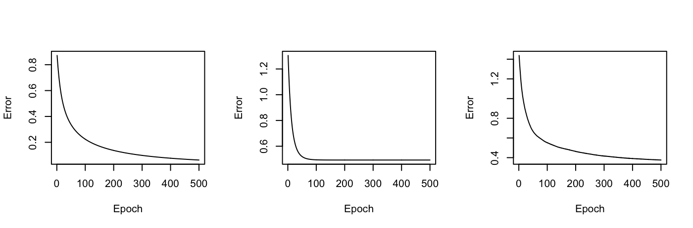
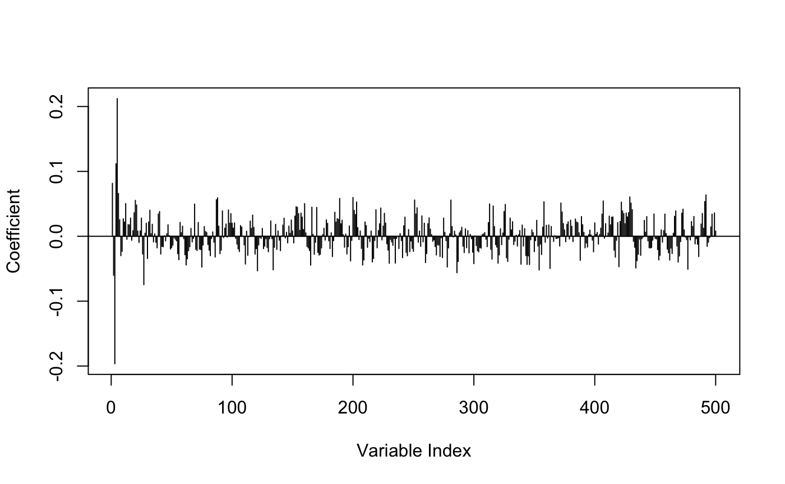

vignettes/logreg.Rmd
logreg.RmdThe logreg package implemented logistic regression and regularized logistic regression models with the computational graph and automatic differentiation framework provided by the R package cgraph.
In this vignette, we will test the methods implemented in this package:
We will also compare them with one existing method to make sure the data can be fitted by a reasonable regularized logistic regression model:
Let’s simulate some data for testing high-dimensional linear models:
sim <- msaenet.sim.binomial(
n = 500, p = 500, rho = 0.5, coef = rnorm(5, sd = 5), snr = 2,
p.train = 0.7, seed = 2019
)Now we have
rho = 0.5) and moderate signal-to-noise ratio (snr = 2).Fit the models on the training set:
fit_base <- fit_logistic(x = sim$x.tr, y = sim$y.tr, n_epochs = 500)
fit_ridge <- fit_logistic_ridge(x = sim$x.tr, y = sim$y.tr, n_epochs = 500, lambda = 0.5)
fit_selo <- fit_logistic_selo(x = sim$x.tr, y = sim$y.tr, n_epochs = 500, tau = 0.05)
fit_msaenet <- msaenet(sim$x.tr, sim$y.tr, family = "binomial", init = "ridge", tune = "ebic", nsteps = 10L, seed = 2009)Plot the training errors vs. epochs:
par(mfrow = c(1, 3))
plot_error(fit_base)
plot_error(fit_ridge)
plot_error(fit_selo)
The ridge model converged around 100 epochs, much faster than the other two models (vanilla and SELO).
Let’s plot the estimated coefficients and see if they meet our expectations.
The logistic regression got the overall correct estimation for true variables; other variables got smaller coefficients:
plot_coef(fit_base)For the ridge model, some shrinkage effects are observed while no sparsity was induced, as expected:
plot_coef(fit_ridge)
For the SELO model, we can see the shrinkage effect and apparent sparsity in the estimation results. Note that the near-zero coefficients are not estimated as precisely 0, due to the limitation of our unconstrained gradient-based optimization method.
plot_coef(fit_selo)The multi-step adaptive elastic-net gave us a model closest to the true model, with 4 in 5 true variables estimated to be non-zero, with all others being 0 (1 false negative):
plot_coef(fit_msaenet)Let’s compute AUC on the training and test set.
The logistic regression model sets the baseline, and overfits the training set:
## [1] 1.0000000 0.6626506The ridge model clearly overfits the training set too, but with 3% to 4% AUC improvement on the test set compared to the baseline:
## [1] 0.9923589 0.6951987The SELO model overfits the training set, with an almost 10% AUC improvement on the test set compared to the baseline:
## [1] 0.9912813 0.7574177The multi-step adaptive elastic-net model has similar AUCs over the training set and set set. with a 20% AUC improvement on the test set compared to the baseline:
## [1] 0.8928618 0.8730444